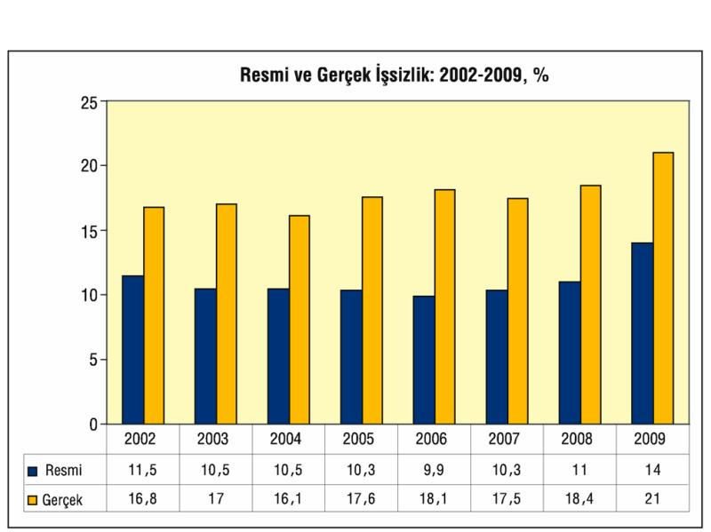

2009 yılı işsizlik verileri, 1 yılda resmi işsizliğin yüzde 11'den yüzde 14 basamağına tırmandığını, resmi işsiz sayısının 1 yılda 860 bin artarak 3,5 milyona yaklaştığını ortaya koydu. Bu işsizlerin yüzde 38'inin en az lise diploması "okumuş işsiz" olması, çocuklarını bin bir fedakarlıklarla okutan ailelerin tahammül gücünü zorluyor. İşsizlerin en çok lise diploması sahipleri arasında olduğu ve lise mezunları arasında işsizliğin yüzde 18'e çıktığı görülüyor. Yaklaşık 500 bini bulan liseli işsizlere, meslek okulu, yüksekokul ve fakülte mezunu 850 bin işsiz eklendiğinde, "lise ve lise üstü diplomalı işsiz" sayısının 1 milyon 350 bine çıktığı anlaşılıyor.
Lise üstü diploması olanlardan en yüksek işsizlik oranı sosyal hizmetler, sanat ve ulaştırma alanlarında. Her 100 bilgisayar fakültesi mezunundan 21'inin, her 100 eğitim fakültesi mezunundan 15'inin işsiz olması, bu gençlerin ailelerinin uzun süre kabullenecekleri bir durum değil.
| İŞGÜCÜ VE İŞSİZLERİN EĞİTİM DURUMU, 2009 | ||||
| (Bin kişi, 15+ yaş) | ||||
| Eğitim durumu ve mezun olunan alan | İşgücü | İşsiz | İstihdam | İşsizlik oranı (%) |
| 24 748 | 3 471 | 21 277 | 14, 0 | |
| Okuma yazma bilmeyen | 1 089 | 87 | 1 002 | 8, 0 |
| Okuma yazma bilen fakat bir okul bitirmeyen | 1 167 | 179 | 988 | 15, 3 |
| İlkokul | 9 394 | 1 143 | 8 251 | 12, 2 |
| İlköğretim, ortaokul ve orta dengi meslek | 4 035 | 711 | 3 324 | 17, 6 |
| Genel lise | 2 764 | 498 | 2 266 | 18, 0 |
| Meslek lisesi, fakülte diplomalılar | 6.299 | 852 | 5.447 | 13, 5 |
| Lise+ | 9.063 | 1.350 | 7.713 | 14 |
| Lise+% | 36, 6 | 38, 9 | 36, 3 | |
| Meslek lisesi, fakülte diplomalılar (işsizliğe göre) |
||||
| Sosyal hizmetler | 11 | 3 | 7 | 31, 3 |
| Sanat | 223 | 54 | 169 | 24, 1 |
| Ulaştırma hizmetleri ve çevre koruma | 17 | 4 | 13 | 21, 1 |
| Bilgisayar | 124 | 25 | 98 | 20, 6 |
| Gazetecilik ve enformasyon | 17 | 3 | 14 | 19, 1 |
| İş ve yönetim | 1.405 | 235 | 117 | 16, 7 |
| Kişisel hizmetler | 145 | 24 | 121 | 16, 6 |
| İmalat ve işleme | 439 | 68 | 371 | 15, 4 |
| Tarım, ormancılık ve balıkçılık | 116 | 18 | 98 | 15, 3 |
| Fizik bilimleri | 126 | 19 | 107 | 14, 7 |
| Mühendislik ve işleri | 1.076 | 138 | 938 | 12, 8 |
| Yaşam bilimleri | 34 | 4 | 30 | 12, 4 |
| Öğretmen eğitimi ve eğitim bilimleri | 881 | 108 | 773 | 12, 2 |
| Mimarlık ve inşaat | 246 | 30 | 216 | 12, 1 |
| Matematik ve istatistik | 59 | 7 | 52 | 12, 0 |
| Sosyal bilimler ve davranış bilimleri | 352 | 41 | 310 | 11, 8 |
| Beşeri bilimler | 454 | 50 | 403 | 11, 1 |
| Veterinerlik | 32 | 2 | 30 | 6, 8 |
| Hukuk | 74 | 3 | 71 | 4, 3 |
| Sağlık | 373 | 15 | 359 | 4, 0 |
| Güvenlik hizmetleri | 96 | 2 | 94 | 1, 6 |
Dahası, "umudunu yitirmiş işsizler" ile birlikte gerçek işsizlik oranı yüzde 20'lere, işsiz sayısı da 6 milyona yaklaştı. Hükümet de, istihdamın dümeninin tamamen terk edildiği özel sektör de, istihdamın artırılması konusunda hiçbir ümit vermiyor.
Aileye giren gelirin geçime yetmemesi ile çalışmak isteyen kadın ve emekliler işgücü pazarına girmekte, alttan yeni okul mezunları gelmekte, ama bunları istihdam edecek iş alanları açılamamaktadır. Tersine, kamuda 4/C ve sözleşmeli personel uygulamaları ile istihdamı daraltma yolları denenmekte, özel sektörde de şartlara uyum adı altında tensikatlara devam edilmekte ve/veya işi olanların sosyal güvenlik hakları, iş yasalarından doğan hakları budanmakta, güvencesizleştirmeyi hızlandıracak "reform" hamlelerinin hazırlıkları yapılmakta.
